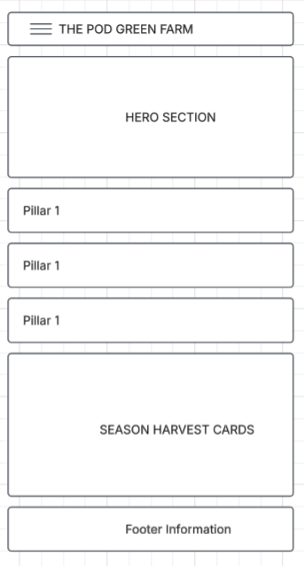
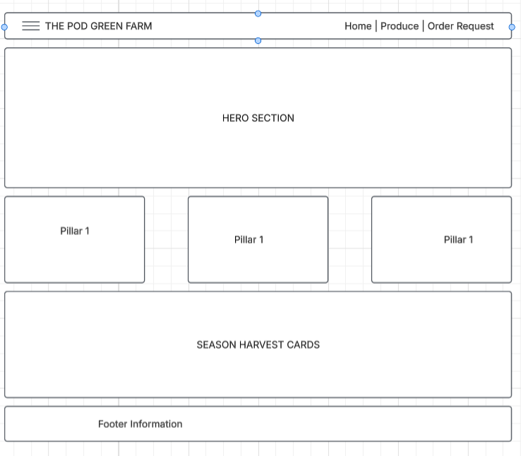

1. Site Name
Site Name: THE POD Green Farm
Reason for Name: The name represents a hub of sustainable growth and natural vitality ("POD" symbolizing seed pods, protection, and condensed nutrients). It aligns with our focus on modern eco-friendly farming practices and direct access to clean, organic produce.
Optional Domain Availability: thepodgreenfarm.org
2. Site Purpose
The site serves as a 3-page dynamic web platform designed to present sustainable farming solutions and connect consumers, restaurants, and wholesalers directly to fresh produce and agri-tech services:
- Page 1 — Home / Overview: Introduces the farm's eco-friendly mission, modern agricultural practices, and seasonal harvest highlights.
- Page 2 — Produce Catalog & Agri-Tech Solutions: Features an interactive directory with dynamic JS filters to sort crops by harvest type, pricing, and current availability.
- Page 3 — Order Request & Inquiry Form: Provides a structured interface for custom farm orders, bulk wholesale requests, farm visit bookings, and consultation inquiries.
3. Target Audience Scenarios
The following questions represent inquiries from prospective site visitors and local consumers:
- Scenario 1: "Where can I view current seasonal produce inventory and filter items by organic certification or availability?"
- Scenario 2: "How do I request a bulk wholesale order or schedule a farm visit consultation for sustainable farming setups?"
4. Color Schema
This planning document directly applies the selected color palette reflecting environmental sustainability and fresh agricultural produce:
Header background, primary section headings
Subheadings, section borders, active states
Call-to-action buttons, interactive filters
Harvest badges, featured alerts
Card containers, form background panels
5. Typography
Heading Font: Montserrat
Applied to primary titles (H1, H2, H3), navigation links, and major callout text to provide clean, high-contrast structural visibility.
Body Font: Open Sans
Applied to all body copy, produce descriptions, tabular data, and input form labels to ensure high legibility across mobile and desktop devices.
6. Wireframes
Wireframe layouts showing the home page layout structural organization across screen sizes:
Mobile View
Single-column stacked structure optimized for narrow touch screens.

Desktop View
Multi-column layout utilizing CSS Grid for feature highlights and produce preview grids.
